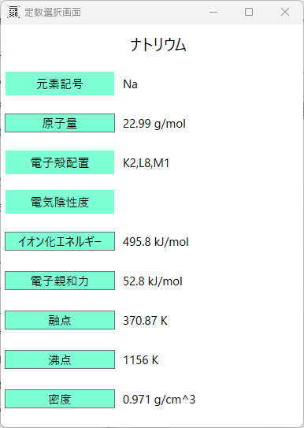
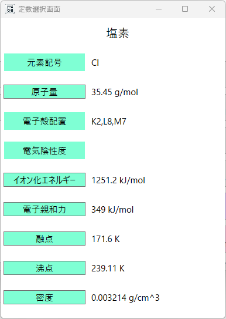
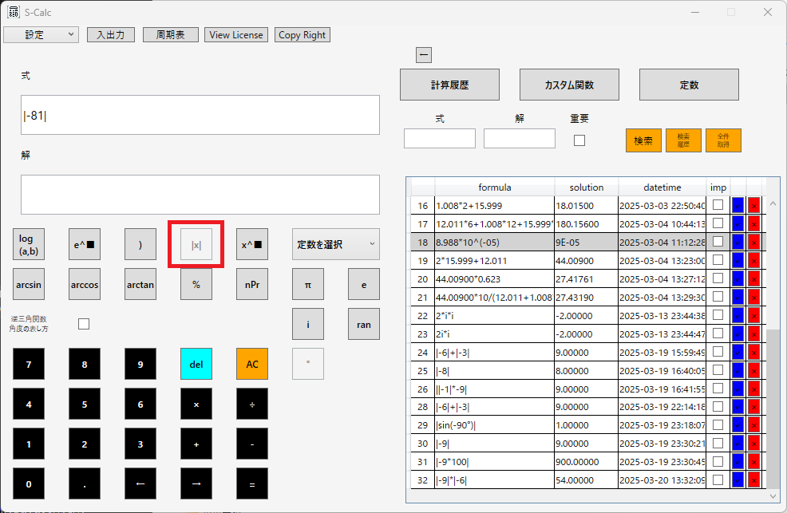
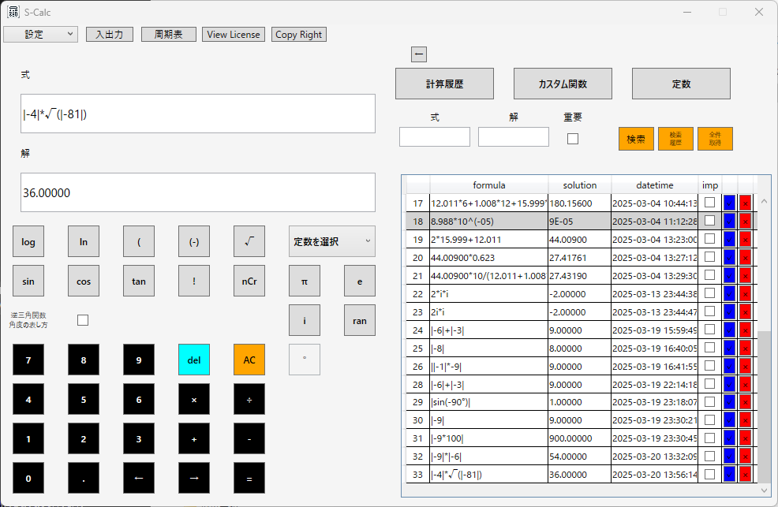

News
qiita投稿のお知らせ（2025年7月9日）
Microsoft Storeで関数電卓ソフト「S-Calc」シリーズ3本を公開した体験を、Qiita記事としてまとめました。
命名ミスの修正方法、Store側の反映遅延、MSIXでの公開時の注意点などを、実際の事例とともに紹介しています。
▶ 記事はこちら
https://qiita.com/k_okano/items/4dcfe8ef22484ff574c0
--- --- --- --- --- --- --- --- --- --- --- --- --- --- --- --- --- --- --- --- --- --- --- ---
note投稿のお知らせ（2025年7月5日）
noteに記事を投稿しました。
病気や障害を抱えながらソフトウェア開発に挑戦している経緯や、S-Calcの開発についてまとめています。
ぜひご覧ください。
精神障害者手帳3級の私が、それでもITで挑戦を続ける理由と、障害年金という壁（note）
--- --- --- --- --- --- --- --- --- --- --- --- --- --- --- --- --- --- --- --- --- --- --- ---
S-Calc Lite Microsoft Storeでの公開のお知らせ（2025年7月3日）
この度、S-Calc Fullに続き、Microsoft Storeに申請していたS-Calc Liteが公開されました。
以下のURLから購入ページへ遷移することが出来ますので、ぜひご確認ください。
S-Calc Lite を Microsoft Store で購入する
--- --- --- --- --- --- --- --- --- --- --- --- --- --- --- --- --- --- --- --- --- --- --- ---
S-Calc Full Microsoft Storeでの公開のお知らせ（2025年6月30日）
この度、Microsoft Storeに申請していたS-Calc Fullが公開されました。
以下のURLから購入ページへ遷移することが出来ますので、ぜひご確認ください。
S-Calc Full を Microsoft Store で購入する
--- --- --- --- --- --- --- --- --- --- --- --- --- --- --- --- --- --- --- --- --- --- --- ---
S-Calc Full マイナーバージョンアップのお知らせ（2025年5月27日）
S-Calc Fullをマイナーバージョンアップいたしました。
バージョンアップ箇所は以下です。


関数電卓の計算としては使いませんが、原子の電子殻配置を搭載いたしました。
搭載した理由として、私自身、高校・大学と化学を専門に学び、研究や業務でも関数電卓を使ってきました。
その中で「ちょっと電子配置が確認できたらいいのに」と思う場面がたびたびありました。
特に価電子数やイオンの安定性をざっと確認したいときに、
「K殻に2個、L殻に8個…」という殻ベースの電子数が見られると非常に便利だと感じていました。
関数電卓で周期表を見ることができるだけでなく、電子殻ごとの分布までひと目で確認できることで、
- 学習用途（中学〜高校）
- 研究支援（化学物質の性質を確認）
- 実験前の準備（反応性・安定性の検討）
電子殻配置は直接的な数値計算に使われることは多くありませんが、
化学計算の背景理解や補助知識として非常に基本的な情報です。
たとえば「Naの価電子が1個である」といった判断や、
「Cl⁻がどうして安定なのか」といった思考の補助になります。
S-Calcではこうした“補助的だけれど現場で役立つ情報”を取り込むことで、
ただの電卓ではない、“理系の作業に寄り添う道具”として進化しています。
--- --- --- --- --- --- --- --- --- --- --- --- --- --- --- --- --- --- --- --- --- --- --- ---
noteへの記事投稿（2025年4月9日）
noteにて「S-Calcの使いどころ」についての記事を投稿しました。
mol濃度・BMI・単位変換など、定型計算における活用例を紹介しています。
“またこの計算か…”と思ったことがある人へ。作業効率を変える関数電卓S-Calcの使いどころ
--- --- --- --- --- --- --- --- --- --- --- --- --- --- --- --- --- --- --- --- --- --- --- ---
Qiitaおよびnoteへの記事投稿（2025年4月5日）
Qiitaとnoteにて、S-Calcの紹介記事を投稿しました。
投稿内容の概要とURLは以下の通りです。
▶ Qiitaの記事はこちら
本記事では、S-Calcの機能紹介を中心に以下の内容を掲載しています。
- S-Calcの開発経緯
- 使用例と画面イメージ
- 定数・カスタム関数・周期表機能の活用例
▶ noteの記事はこちら
noteでは、自己紹介を中心に、開発に対する想いや今後の発信予定などを掲載しています。
今後も上記Qiitaとnoteに記事を投稿することがあると思うので、投稿した際にはこちらのNewsページかXでお知らせさせていただきます。
--- --- --- --- --- --- --- --- --- --- --- --- --- --- --- --- --- --- --- --- --- --- --- ---
Qiitaへの記事の投稿（2025年3月24日）
QiitaへS-Calc紹介記事を投稿しました。
投稿した記事のURLは以下です。
https://qiita.com/k_okano/items/ab47cced7fb0f484e501
こちらの記事で私がS-Calcを開発した経緯について触れていますので、ぜひご確認いただければと思います。
--- --- --- --- --- --- --- --- --- --- --- --- --- --- --- --- --- --- --- --- --- --- --- ---
S-Calcバージョンアップのお知らせ（2025年3月20日）
S-Calcのバージョンを1.2.0にマイナーバージョンアップいたしました。
・絶対値記号 || を重複して入力できないようにしました。
変更の理由
通常の数式において、絶対値記号が連続して使用されるケースは極めて稀であり、誤入力による意図しない計算結果を防ぐために仕様を変更しました。
以下の画像は、今回のバージョンアップ後の仕様を示したものです。
絶対値記号 || の連続入力が制限され、誤入力を防ぐようになりました。

変更点:- 絶対値記号 `||` を連続して入力できないように修正
- 誤入力による意図しない計算結果を防ぐ仕様に変更
赤枠で囲まれている部分は、変更後の動作の一例を示しています。
絶対値記号が適切に処理され、誤った連続入力が発生しないことを確認できます。

--- --- --- --- --- --- --- --- --- --- --- --- --- --- --- --- --- --- --- --- --- --- --- ---
FAQの追加（2025年3月7日）
FAQページを追加いたしました。
今は私の方で思いついたもののみ記載しておりますが、皆様から頂戴したご質問とその回答は記載していこうと考えております。
皆様からのご質問について、「X」「LinkedIn」「Contactページ」からお問い合わせいただければと思います。
FAQはこちら
--- --- --- --- --- --- --- --- --- --- --- --- --- --- --- --- --- --- --- --- --- --- --- ---
ページの編集（2025年3月7日）
Developページにソフトイメージを貼り付けました。
現在、各企業でDXが進められようとしているかと思いますが、その中でもDXしたいと考えられるであろう「帳票作成」と「データ管理」のサンプルソフトを記載しております。
画像が見にくいなどございましたら、「X」「LinkedIn」「Contactページ」からお問い合わせいただければと思います。
Developmentはこちら
Contactはこちら
--- --- --- --- --- --- --- --- --- --- --- --- --- --- --- --- --- --- --- --- --- --- --- ---
ページの追加（2025年3月5日）
当ホームページに新しいページを追加いたしました。
画面上部のリンクボタン一覧に「Development」というボタンが増えました。
こちらでは、Windows向けソフトウェアの開発やホームページ開発の案件以来について記載しております。
Developmentはこちら
--- --- --- --- --- --- --- --- --- --- --- --- --- --- --- --- --- --- --- --- --- --- --- ---
ページの追加（2025年3月4日）
当ホームページに新しいページを追加いたしました。
画面上部のリンクボタン一覧に「Tips & Tricks」というボタンが増えました。
こちらからは、Windows向け高機能関数電卓「S-Calc」の機能紹介をしているページに遷移することが出来ます。
Tips & Tricksはこちら
--- --- --- --- --- --- --- --- --- --- --- --- --- --- --- --- --- --- --- --- --- --- --- ---
「S-Calc」の紹介動画を公開しました（2025年2月20日）
Windows向け高機能関数電卓「S-Calc」の紹介動画をYouTubeに投稿しました。
この動画では、「S-Calc」の基本機能やカスタム関数、定数機能について詳しく解説しています。
ぜひご覧ください！
📌 YouTubeで動画を見る → こちらをクリック